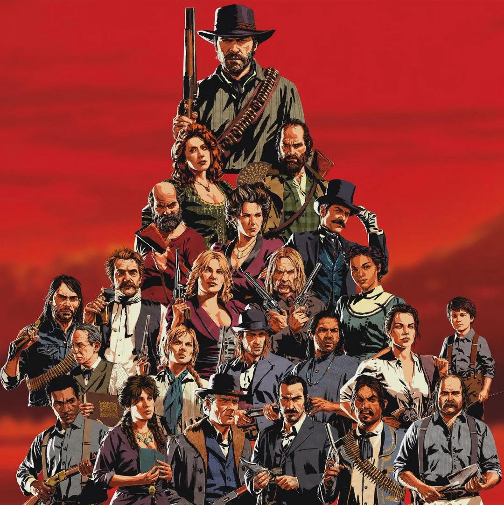

VISÃO GERAL
A Gangue Van der Linde
Após um assalto fracassado em Blackwater, Dutch van der Linde e seus seguidores fogem pelas montanhas, perseguidos por agentes federais e caçadores de recompensa.
Pelos olhos de Arthur Morgan, acompanhamos a gangue roubar, lutar e sobreviver no coração da América — enquanto a lealdade se desfaz e a civilização avança sobre a fronteira.
PERSONAGENS

Arthur Morgan
PROTAGONISTA/BRAÇO DIREITO
O principal executor da gangue Van der Linde. Criado por Dutch desde jovem, Arthur é um fora da lei implacável que começa a questionar sua própria lealdade e moralidade à medida que o cerco da lei se fecha.

Dutch van der Linde
LÍDER/IDEIALISTA
O fundador carismático da gangue. Ele prega a liberdade contra as regras da civilização moderna, mas sua obsessão por um último grande golpe e a pressão constante colocam sua sanidade e o grupo em risco. Seus planos ficam cada vez mais desesperados.

John Marston
FORA DA LEI EM CONFLITO
Outro jovem criado por Dutch, mas que mantém uma relação conturbada com a gangue após abandoná-la temporariamente. Ele precisa amadurecer à força para proteger sua família e garantir um futuro longe do crime.

Hosea Matthews
COFUNDADOR/ESTRATEGISTA
O parceiro mais antigo de Dutch e a voz da razão do grupo. Inteligente e diplomático, Hosea prefere resolver problemas com lábia e golpes elaborados em vez de tiroteios desnecessários.

Micah Bell
PISTOLEIRO/CATALISADOR DE CONFLITOS
Um fora da lei impulsivo, violento e imprevisível que entrou recentemente para a gangue. Sua influência tóxica sobre Dutch gera constantes atritos internos, especialmente com Arthur.

Sadie Adler
VIÚVA/CAÇADORA DE RECOMPENSAS
Resgatada pela gangue após ter sua vida destruída pelos O'Driscolls, ela deixa para trás o papel de vítima para se tornar uma das combatentes mais ferozes, destemidas e leais ao lado de Arthur.

Charles Smith
RASTREADOR/BATEDOR
Um caçador habilidoso, calmo e reservado. Apesar de ser um membro relativamente novo, destaca-se por sua forte bússola moral, tornando-se um dos aliados mais confiáveis nos momentos de crise.

Abigail Roberts
MÃE/CONCIÊNCIA MORAL
Uma mulher forte e pragmática que cresceu na gangue. Seu único objetivo é convencer John a abandonar a vida de fora da lei para que possam criar seu filho em paz e segurança.

Jack Marston
FILHO/FUTURO DA FAMÍLIA
O filho pequeno de John e Abigail, criado na estrada cercado por fora da lei. Ele representa a inocência no meio do caos e é a principal motivação para os sacrifícios feitos pelos adultos ao seu redor.